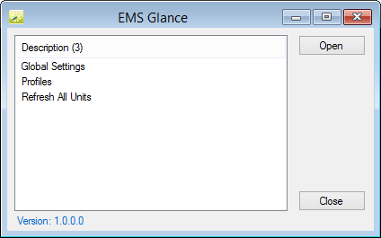
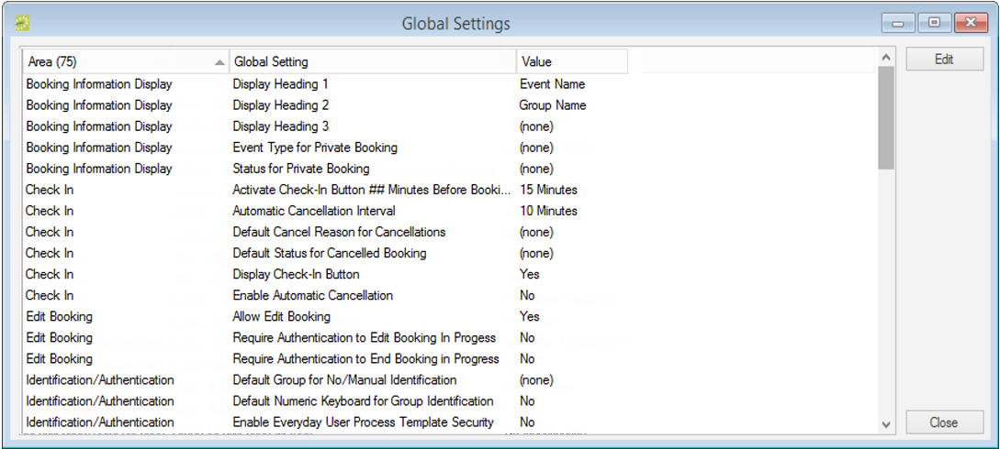
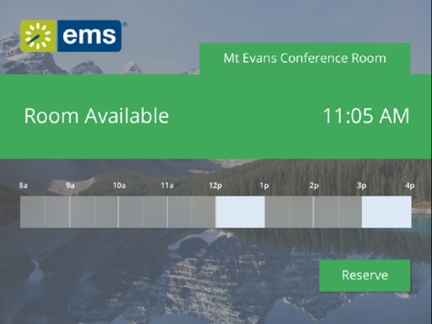
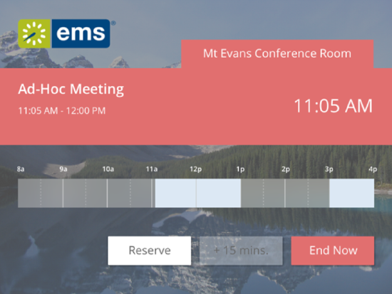

This topic discusses the different settings in your
When configuring devices (such as tablets) to use the
On the
The

Profiles—Controls the functionality of your EMS Room Sign App units. Depending on how you would like to manage your EMS Room Sign App devices, a single profile can be configured to manage a single meeting room or multiple meeting rooms. See Also: Configure EMS Room Sign App Profiles.
A particular device is tied to one specific room in EMS. Profiles just provide you with flexibility in how you choose to manage the configuration of your devices.
Global settings affect the booking detail information that is displayed for all the profiles in your EMS Room Sign App instance. You can set how information displays at the Global level (the default for all Profiles) or for just one Profile.
You can override these settings on a per profile basis on the Settings tab of the Profile dialog box.

Global Settings Dialog Box
EMS Room Sign App consists of two primary screens: the Available screen and the In Progress screen. Both Global settings and Profile settings determine the booking information that is displayed on the various screens.

Available Screen (Example of a future meeting with setup and teardown)

In Progress Screen